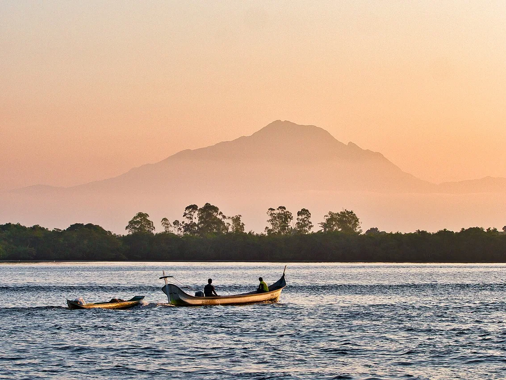
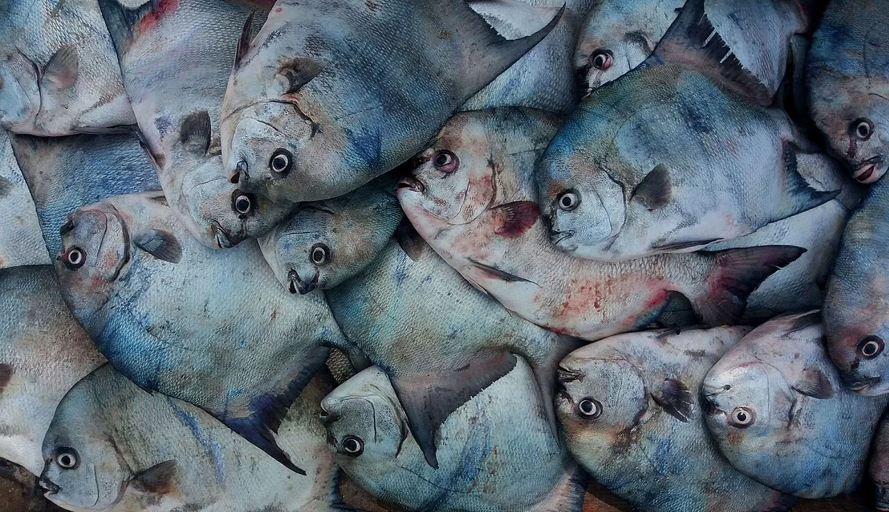

Uma rede de pesca pode contar mais de uma história. Ela fala do alimento levado para casa, dos trajetos de canoa, do conhecimento acumulado pelas famílias e das mudanças percebidas por quem trabalha na baía. Foi por esse caminho que a pesquisa conduzida pela professora Josélia aproximou a sala de aula das comunidades de Piaçaguera e Amparo.
Os estudantes reuniram mapas mentais, folhetos, fotografias e entrevistas com moradores, pescadores e mulheres envolvidas na pesca. Um segundo material registra a conversa com um antigo representante da associação de moradores de Piaçaguera e sintetiza percepções locais sobre a atividade. Juntos, esses documentos ajudam a perceber a pesca artesanal como trabalho, memória, participação comunitária e patrimônio vivo.

Uma pesquisa que saiu dos cadernos e chegou às comunidades
O registro visual do projeto apresenta produções de estudantes sobre o camarão e suas relações com a história, a economia e o ambiente. Há trabalhos voltados ao Amparo e a Piaçaguera, além de imagens de visitas, embarcações, instrumentos de pesca e encontros com pessoas das comunidades.
Nas páginas de campo, a turma documentou entrevistas com moradores e pescadores, inclusive conversas com mulheres sobre o trabalho com o camarão. Essas atividades aproximam a pesquisa escolar de uma fonte que não cabe apenas em tabelas: a memória de quem conhece as mudanças no território.
O que uma associação de moradores conta sobre a pesca?
O material de entrevista identifica Artur José Mendes como fundador, em 1994, da Associação de Moradores da Ilha de Piaçaguera e informa que ele exerceu a presidência durante 20 anos. O relato associa a trajetória comunitária à importância da pesca artesanal para o sustento das famílias.
Segundo o registro da conversa, o entrevistado mencionou mais de 60 famílias ligadas à pesca, das quais 32 teriam a situação descrita no trabalho como “carteira registrada”. Esses números pertencem à fala registrada no material: não são apresentados como censo, cadastro oficial ou retrato atualizado da população.
O relato também compara tempos de maior fartura com uma pesca hoje percebida como menos abundante. Essa lembrança é uma pista para novas perguntas: o que mudou nos locais de captura, nas técnicas, na circulação das embarcações e nas alternativas de trabalho?
Da tarrafa ao gerival: nomes que guardam modos de fazer
Na síntese da entrevista, o camarão aparece como pescado central para a comunidade, ao lado de peixes como pescada, linguado e bagre. O documento lembra uma técnica chamada “tarrafa de engoto” e registra o termo “pesca de gerival”, além de mencionar redes, canoas, bateras e botes. Mantemos aqui os nomes tal como foram anotados pelos estudantes: a grafia e a descrição técnica de alguns instrumentos ainda precisam ser confirmadas com praticantes locais.
O entrevistado situa um dos locais de captura no baixio da Ilha das Cobras (grafado “baxiu” no material escolar) e recorda janeiro a março como período mais produtivo. São informações de memória local, que não devem ser interpretadas como indicação atual de temporada permitida, calendário de defeso ou autorização para pescar.

As mulheres não estão à margem dessa história
Uma parte importante dos trabalhos da professora Josélia é dedicada às mulheres da pesca. O registro fotográfico mostra estudantes entrevistando mulheres da comunidade, e o material textual de Piaçaguera destaca saberes aprendidos na infância com pais e avós.
A pesquisa escolar descreve uma reorganização do trabalho familiar: com a redução da pesca percebida por moradores, parte dos homens teria buscado outras ocupações no continente, enquanto mulheres continuaram atuando na captura do camarão. A formulação é uma interpretação registrada no trabalho, não uma contagem atualizada de ocupações por gênero.
Ao reconhecer pescadoras de diferentes gerações, a pesquisa amplia a imagem de quem trabalha no mar. As técnicas, a experiência e a responsabilidade pela economia familiar também são transmitidas por mulheres, mesmo quando sua participação recebe menos visibilidade.
Quando a pesca parece diminuir, quais perguntas surgem?
Os materiais registram preocupação com a redução das capturas de camarão e com o apoio recebido pelas comunidades pesqueiras. Alguns moradores entrevistados associam as dificuldades à expansão portuária e a acidentes ambientais na Baía de Paranaguá, mencionando o navio Vicuña.
É importante manter a diferença entre percepção comunitária e conclusão científica sobre causas. O acidente do Vicuña integra a história ambiental da baía, mas os documentos enviados não medem a evolução dos estoques de camarão nem permitem atribuir isoladamente a uma obra, acidente ou atividade todas as mudanças observadas.
Para prosseguir, a pesquisa pode cruzar entrevistas com séries históricas de desembarque, informações ambientais e documentos oficiais, sempre ouvindo as comunidades que vivem essas transformações.
O que fica quando a pesquisa termina?
Os mapas, os folhetos e as entrevistas mostram que estudar o camarão é também estudar trabalho, deslocamentos, relações familiares, memória e decisões sobre o futuro da baía. A contribuição desses registros está em abrir espaço para que os saberes caiçaras continuem presentes na escola e sejam divulgados com responsabilidade.
O próximo passo não é substituir a fala dos moradores por uma versão única da história, mas aprofundar a escuta, verificar as informações e devolver os resultados às comunidades de Piaçaguera e Amparo.
Notas de apuração, limites e fontes
Autoria pedagógica: professora Josélia; pesquisas e produções das turmas 1ª A e 1ª B. A versão pública omite nomes individuais dos estudantes e não reproduz fotografias de entrevistados ou menores de idade sem comprovação das autorizações.
Documento 1: Projeto “Entre Marés”, apresentação escolar de 14 páginas, com mapas mentais, folhetos, registros de entrevistas, embarcações, instrumentos de pesca e fotografias de atividades em Amparo e Piaçaguera. Destaques: p. 2–4 (produções estudantis), p. 5–6 (entrevistas), p. 8–10 (território e equipamentos), p. 11–14 (registros de campo).
Documento 2: Entrevista com os moradores(as) da Ilha de Piaçaguera, apresentação escolar de 6 páginas. A p. 1 traz o relato associado a Artur José Mendes; as p. 2–3 apresentam técnicas, espécies e sazonalidade percebida; as p. 4–6 reúnem percepções de mudança e a participação das mulheres.
Atenção à identificação: o nome do arquivo enviado do segundo documento menciona a Ilha do Amparo, mas seu título e seu conteúdo tratam da Ilha de Piaçaguera. A reportagem adota a identificação presente nas páginas do material.
Limites: o material apresenta sínteses de entrevistas, não transcrições integrais. Números e percepções de causalidade foram atribuídos ao registro escolar; não há, nesses arquivos, série estatística, confirmação do cadastro profissional ou autorização de publicação das fotografias pessoais. As fotos exibidas nesta página são de contexto regional, com localização e licença informadas.